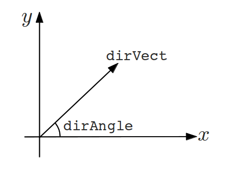

Basic Concepts¶
In this section, basic concepts of gtrace will be introduced.
2D plane¶
In gtrace world, an optical system will be placed on a two dimentional plane. A location on the plane is specified by a set of Cartesian coordinates (x, y). This just a normal x-y plane. The origin of the axes is at the lower left of the plane. The X-axis extends horizontally to the right. The Y-axis goes up vertically. Nothing more to add here.
Direction¶
While working with optical layouts, one often has to specify a direction in the 2D plane such as the orientation of a mirror or the propagation direction of a beam. In gtrace, in most cases, a direction can be specified in two ways. One way is to use an angle measured from the X-axis in counter clockwise (dirAngle in the figure above). The other way is to use a 2D vector of length 1. If a direction can be specified either way, you only have to specify it in one of those methods. For example, the GaussianBeam class has an attribute called dirVect. It holds a 2D vector in the form of numpy.Array. The GaussianBeam class also has an attribute called dirAngle, which holds the angle of the beam propagation direction measured from the X-axis in radian. When one of the two attributes is changed, the other is updated automatically to be consistent with the modification. Therefore, you don’t have to worry about the consistency. For the direction vector, it is also automatically normalized. Therefore, you can assign it a vector of any norm.
Beam¶

A Gaussian beam is represented by an instance of GaussianBeam class. The most fundamental properties of a beam is its position (pos) and the direction of propagation (dirVect or dirAngle).